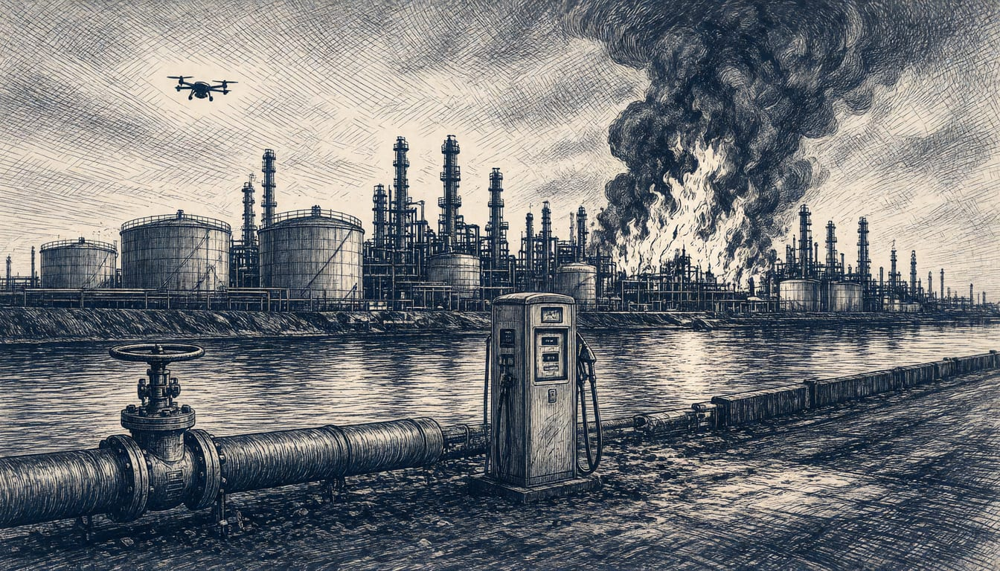

Volgograd strike puts 55% of Russia's gasoline capacity out of action, Vakulenko says
Analyst Vitaly Vakulenko says commercial gasoline production is hit after Ukraine struck the Lukoil plant, one of the key fuel stations for Russia's army in the south according to Ukraine's General Staff. Two industry sources told Reuters refining capacity is down roughly 30% since strikes resumed.

Ukrainian forces struck the Lukoil refinery in Volgograd on the night of 13 November, hitting primary processing units and fuel storage. Russia's Defence Ministry said 1,198 drones were destroyed overnight over Russia and annexed Crimea; TASS called it one of the year's most massive attacks.
With the Volgograd strike counted in, capacity producing about 55% of Russia's commercial gasoline is out of action, oil and gas analyst Vitaly Vakulenko said. Kyiv Post attributes the brief late-October pause in strikes to US pressure, after which Russia reintroduced fuel sales restrictions in multiple regions in early November.
Ukraine's General Staff called the Volgograd plant one of the key fuel stations of the Russian army in the south. It supplies petrol and diesel as well as aviation fuel. The General Staff said a fire broke out on the site, with the ATs-1, ATs-3, ATs-5 and ATs-6 refining units, a hydrotreating unit, a loading rack and six 2,000-cubic-metre reservoirs hit.
The Volgograd plant halted crude oil processing completely on 2 October after a drone attack damaged equipment, Hydrocarbonprocessing reported. Strikes resumed in late October after the pause. Two industry sources told Reuters that Russian refining capacity has been reduced by roughly 30% since the attacks resumed.
Russia's Investigative Committee opened a case under Article 205 of its Criminal Code, the terrorist-act provision. Kyiv's General Staff said its forces will continue to take systematic measures in self-defence. It cited Article 51 of the UN Charter and the aim of compelling Russia to end its aggression.